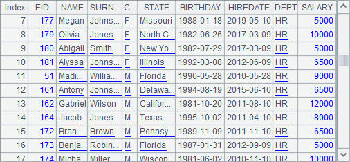
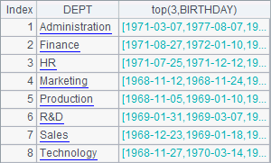
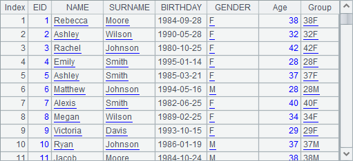
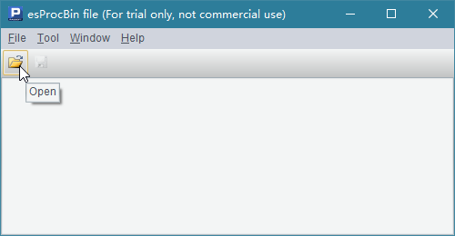
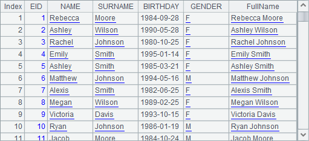
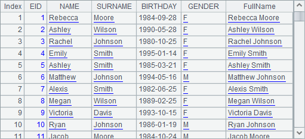
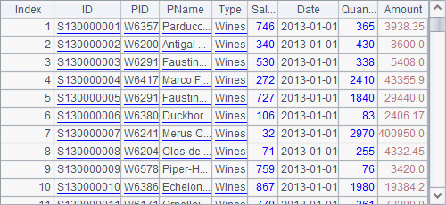

7.8.1 Comparison between bin files and text files
Their uses are almost the same, except that related functions like import, export and cursor need @b option when handling bin files. Here¡¯s an example:

The above two files – PersonnelInfo.btx and PersonnelInfo.txt – hold the same personnel information stored in binary format and text format respectively. Each file includes 100,000 records in 6 fields. As can be seen, the bin file occupies less hard disk space than the text file does.
Let¡¯s look at the data retrieval based on the two types of files:
|
|
A |
|
1 |
=now() |
|
2 |
=file("PersonnelInfo.btx") |
|
3 |
=A2.cursor@b() |
|
4 |
=A3.groups(State;count(~):Count) |
|
5 |
=interval@ms(A1,now()) |
In the cellset, A3 creates a cursor using the bin file with @b option used. A5 computes the time (in millisecond) spent in performing the grouping and aggregate operation over the bin file:

|
|
A |
|
1 |
=now() |
|
2 |
=file("PersonnelInfo.txt") |
|
3 |
=A2.cursor@t() |
|
4 |
=A3.groups(State;count(~):Count) |
|
5 |
=interval@ms(A1,now()) |
The above code performs same operation with the text file. Here¡¯s the time taken to do it:

The above cellsets perform the same grouping and aggregate operation on the bin file and the text file respectively to count the employees of each state and then compute the time (in millisecond) taken to do this in A5. As can be seen from the result, the data retrieval speed with the bin file is significantly higher than that with the text file. So, it is more convenient to use data stored as a bin file in esProc.
The esProc installation package includes a btx Viewer. You can execute BTX.exe in esProc\bin directory to view a btx file. Below is the pop-up window after the execution:
Click the Open icon to open a btx file (whose default extension is btx). You can view a btx file page by page:

Click buttons on the tool bar to view the
first page (), the previous page (), the next page ( ), or the last page ().
), or the last page ().
Click Tool>Option on the menu to set btx Viewer properties, such as the number of rows displayed per page:
